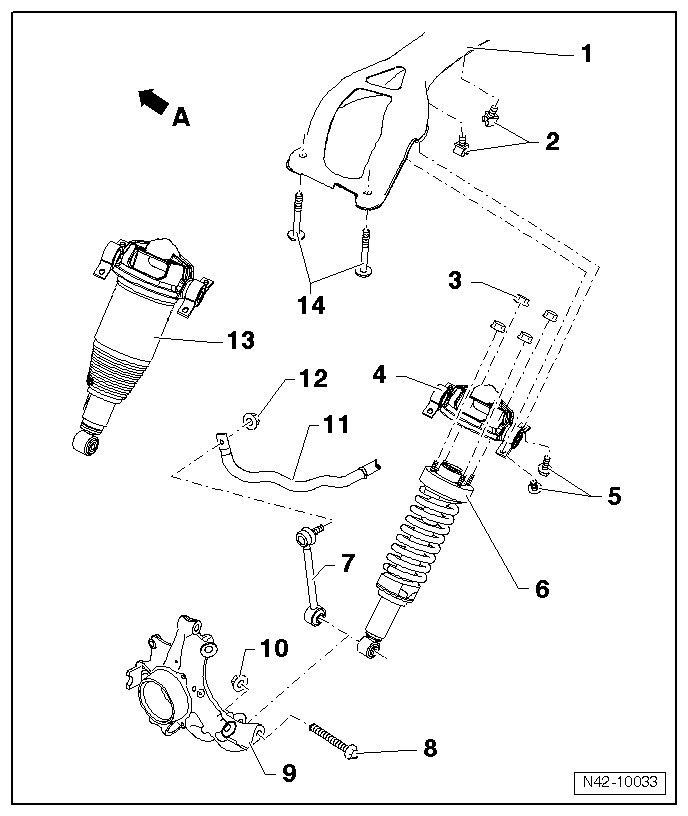

Rear Suspension Assembly Overview
Rear Suspension Assembly Overview
• Welding and straightening work on supporting or wheel carrying components of suspension is not permitted.
• Always replace self locking nuts.
• Always replace corroded bolts/nuts.
• If components with bonded rubber bushings were replaced or bolts/nuts on these components were loosened, corresponding wheel bearing must be lifted into curb weight position. Refer to --> [ Lifting Wheel Bearing to Curb Weight Position ] Front Suspension (AWD).
- Arrow A - direction of travel

1 Crossmember
2 Clip
3 Self locking nut
• 30 Nm.
• Always replace after removal.
4 Mounting bracket
5 Bolt
• M10 x 25.
• 60 Nm.
6 Strut
• Can only be removed together with mounting bracket.
• Assembly overview, refer to --> [ Strut Assembly Overview ] Strut Assembly Overview.
• Removing and installing, refer to --> [ Strut ] Strut.
7 Coupling rod
8 Bolt
• M12 x 1.5 x 125.
• 90 Nm + 90° additional turn.
• Always replace after removal.
9 Wheel bearing housing
• Different versions for 16" and 17", 18" and 18" plus wheels
• Servicing, refer to --> [ Wheel Bearing Housing Bushing ] Wheel Bearing Housing Bushing.
10 Self locking nut
• M12 x 1.5.
• 100 Nm.
• Always replace after removal.
11 Stabilizer bar
12 Self locking nut
• 100 Nm.
• M12 x 1.5.
• Always replace after removal.
13 Air spring damper
• Can only be removed together with mounting bracket.
• Mounting bracket must not be separated from air spring shock absorber.
• Removing and installing, refer to --> [ Air Spring Damper ] Air Spring Damper.
14 Bolt
• M12 x 1.5 x 80.
• 90 Nm + 90° additional turn.
• Always replace after removal.